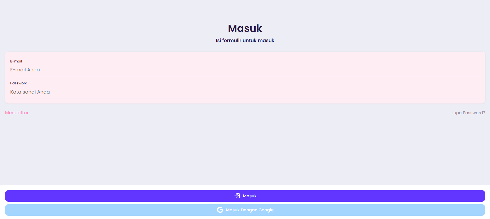
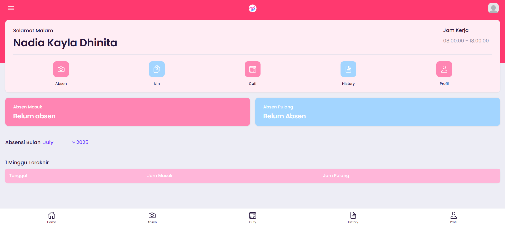
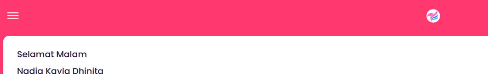
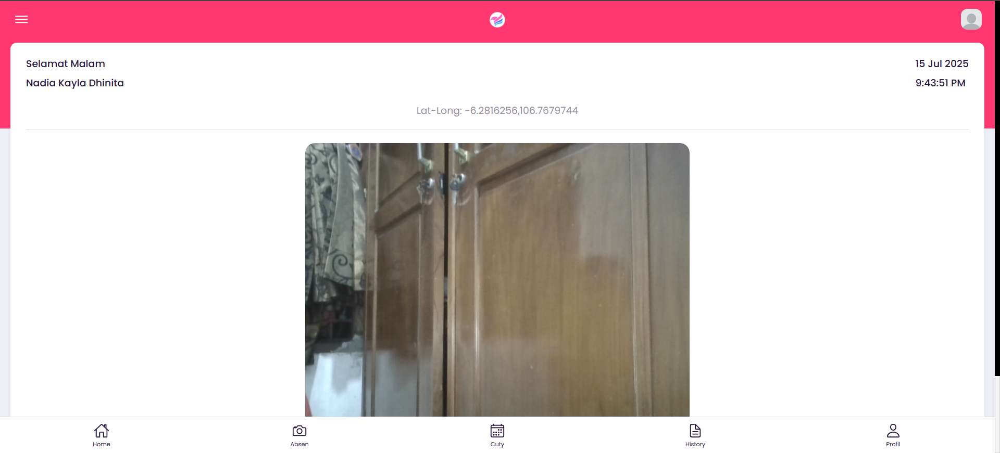
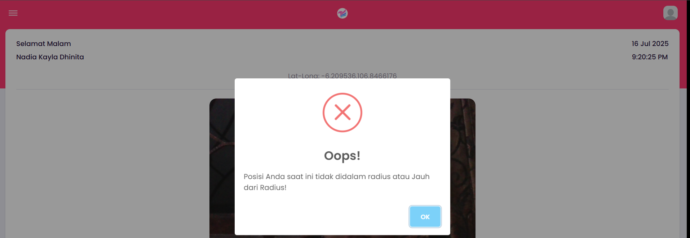
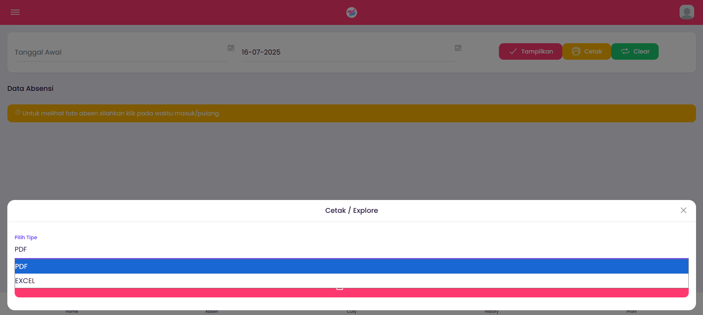
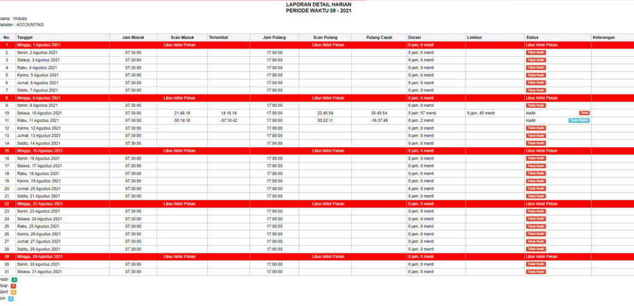
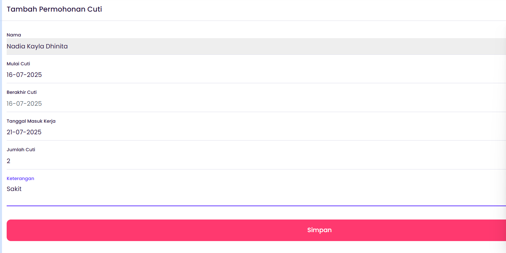

01 / LoginHalaman autentikasi pengguna.
Sistem absensi berbasis PHP Native yang mendukung pencatatan kehadiran melalui pengenalan wajah, kamera, dan geolocation. Project ini mencakup alur absensi pengguna, validasi lokasi, riwayat kehadiran, pengelolaan cuti, hingga laporan administrasi.








Bukti visual di atas menampilkan beberapa alur utama yang dikerjakan, mulai dari login dan absensi sampai validasi lokasi, riwayat kehadiran, laporan, dan pengajuan cuti.